education
University of Waterloo
BASc, Mechatronics Engineering, Honours Co-op
Last login on ttys000
max@portfolio ~ % whoami
Max Yuan · Mechatronics Engineering @ UWaterloo
max@portfolio ~ % cat now.txt
→ humanoid RL + autonomy on WATonomous
→ training a Unitree Go2 to walk with PPO in Isaac Lab
→ getting into VLAs (π₀ / π₀.5) and sim digital twins
max@portfolio ~ % ros2 launch portfolio site.launch.py
[INFO] [robot_state_publisher]: loaded go2.urdf, so101.urdf
[INFO] [site]: about · projects · experience · awards · skills · contact
[INFO] [site]: ready ✓ scroll down, or type help
Robotics portfolio
Mechatronics Engineering @ UWaterloo · WATonomous humanoid team
I build robots that learn to move and handle things: quadruped locomotion with PPO, ROS2 autonomy, and learned + vision-guided manipulation. Next, I'm going deeper into vision-language-action models and simulation.
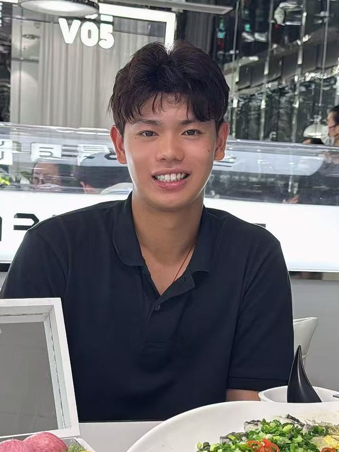
Explore in sim
Two robots loaded from their real URDFs. Pick a waypoint, or type an instruction the way you'd prompt a VLA, and the robot takes you to that part of the site.
drag to orbit · click the floor to set a goal
waypoints are pages of this site. the robot drives you there.
Meshes and kinematics come from Unitree's go2_description and TheRobotStudio's SO-101 URDFs. The gait and grasps here are scripted (inverse kinematics, no trained policy), and the instruction box matches keywords rather than running a model.
Featured work
π₀ VLA · OpenCV · IK · state machine
A dual-arm Bracket Bot that makes a sandwich on its own: toast out of the toaster, lettuce on, top slice closed.
read the case studyIsaac Lab · PPO · rsl_rl
ROS2 · Nav2 · SLAM · AMCL
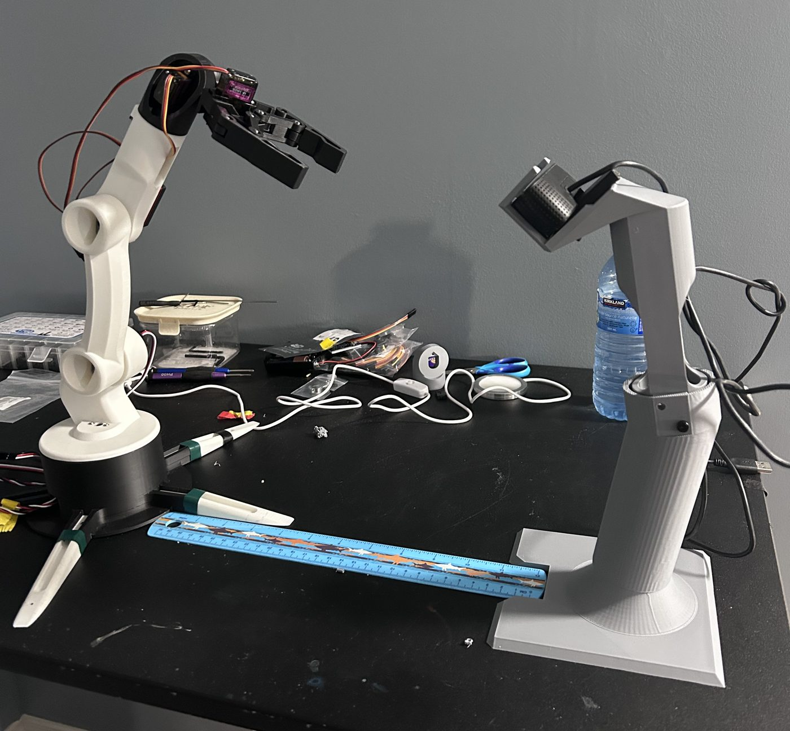
Eureka HacksYOLOv8 · homography · IK
PID · odometry · CNN
Photos, demo videos, highlights, and code.
Behind the builds
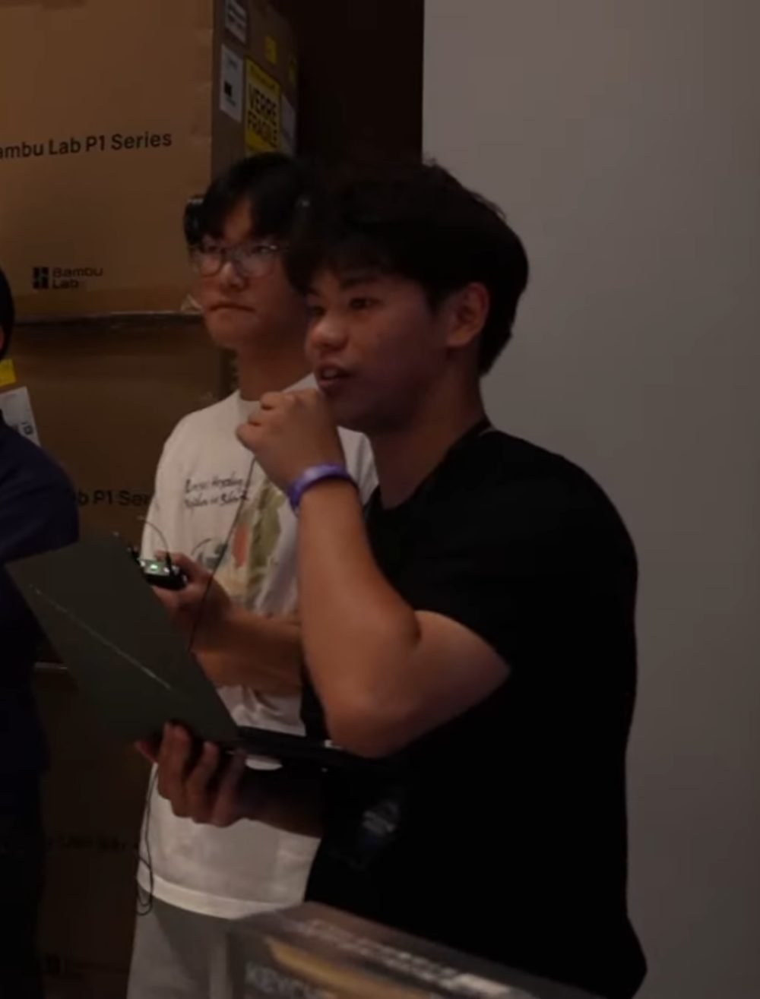
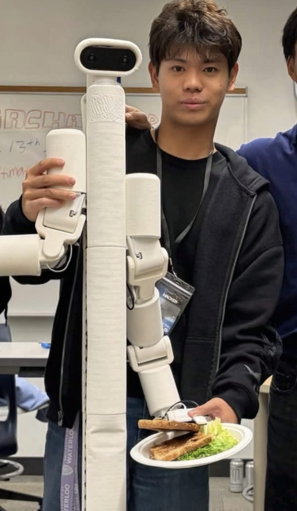


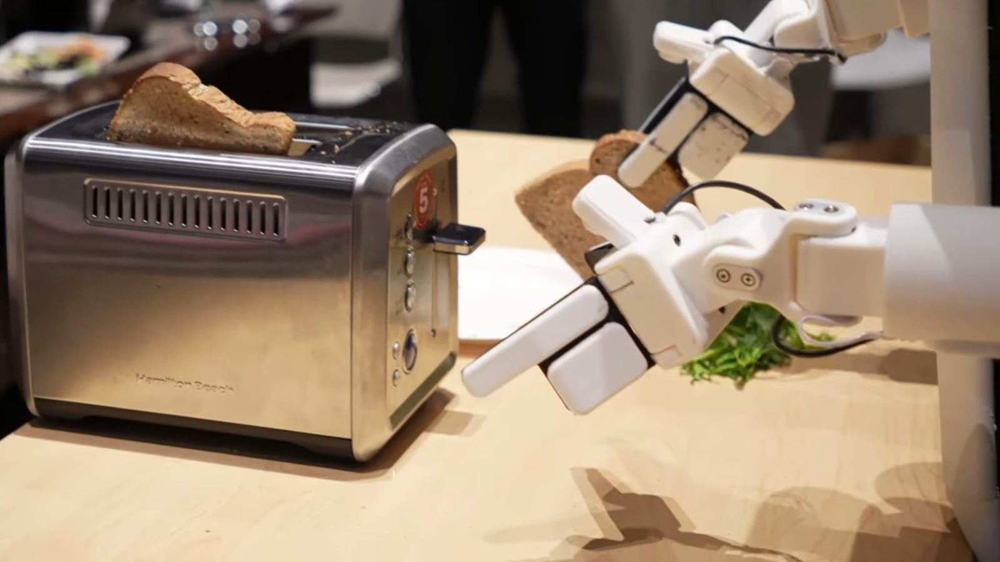
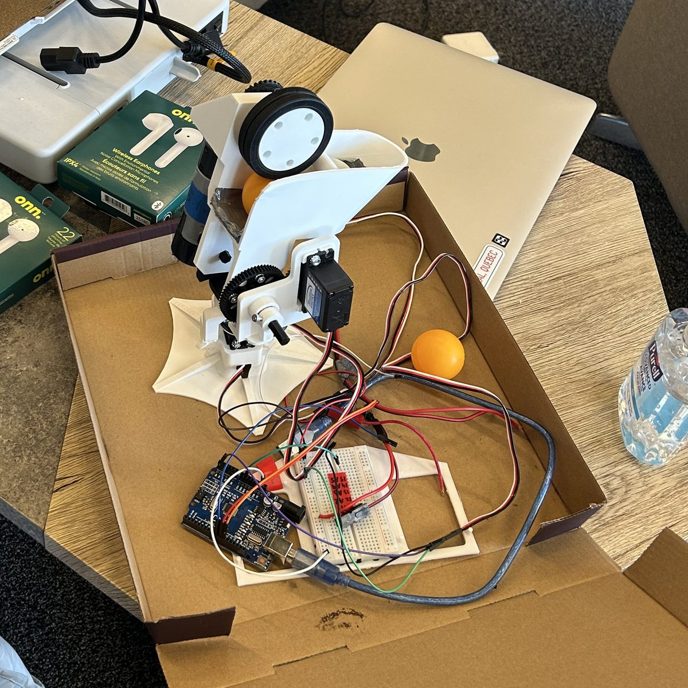
max@portfolio:~/about$ cat README.md
A bit about me, what I'm working on right now, and what I'm looking for.
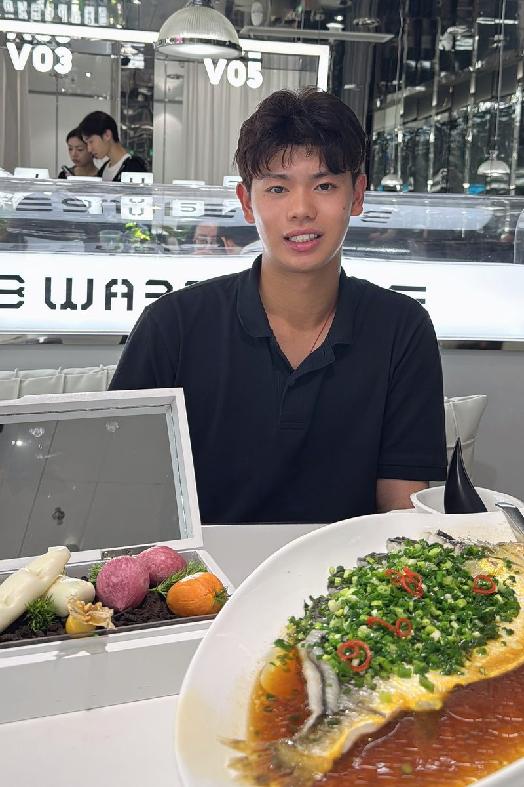
I like robots that have to deal with the real world.
I'm a Mechatronics Engineering student at the University of Waterloo (Honours Co-op, class of 2031). I'm most interested in robots that work in the physical world: legged locomotion, mobile autonomy, and manipulation that mixes learned policies with classical control.
Most of my recent work is robot learning and autonomy. I'm training a Unitree Go2 to walk with PPO in Isaac Lab, I built a ROS2 Nav2 stack that maps and navigates a maze in Isaac Sim, and my team fine-tuned a π₀ vision-language-action model to pull toast out of a toaster, which won 1st place at the BOTS hackathon.
Before university I was co-captain and lead programmer of FTC team 18844 (Pr0teens). We represented Team Canada at the 2025 FIRST World Championships, and I ran robot showcases and SPIKE robotics workshops for 60+ kids across the GTA. Now I'm on WATonomous's humanoid sub team, working on the RL and autonomy stack.
education
BASc, Mechatronics Engineering, Honours Co-op
right now
RL and autonomy stack. Next up: RL in Isaac Lab and simulation digital twins for π₀.5 VLA development.
looking for
Happy to talk about locomotion policies, sim-to-real transfer, robot manipulation, or anything else in robotics.
max@portfolio:~/projects$ ls
Robot learning, autonomy, and manipulation, from hackathon weekends to solo simulation projects and competitive robotics.
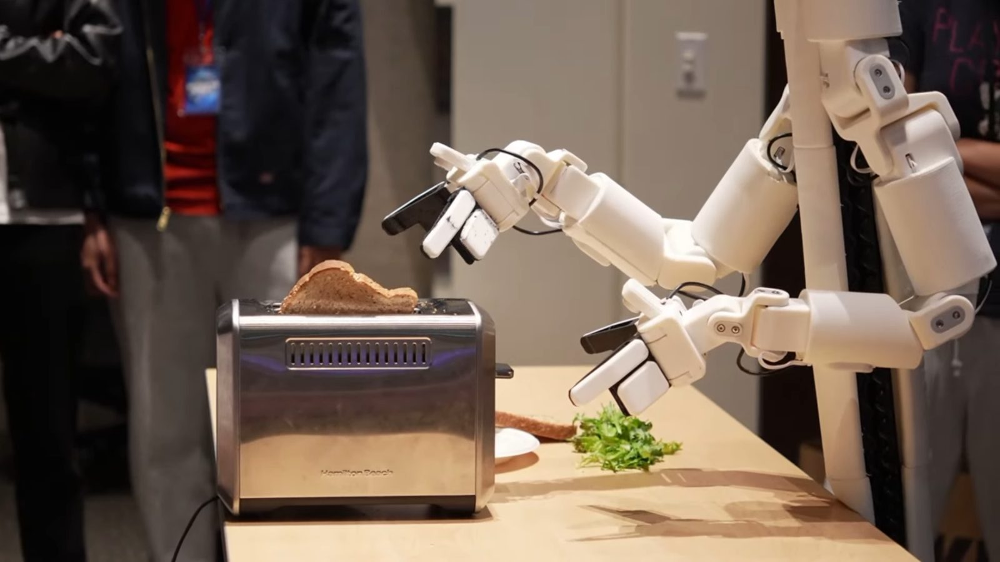
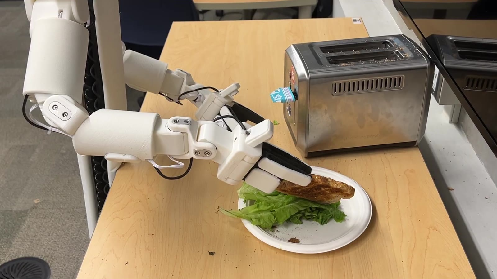
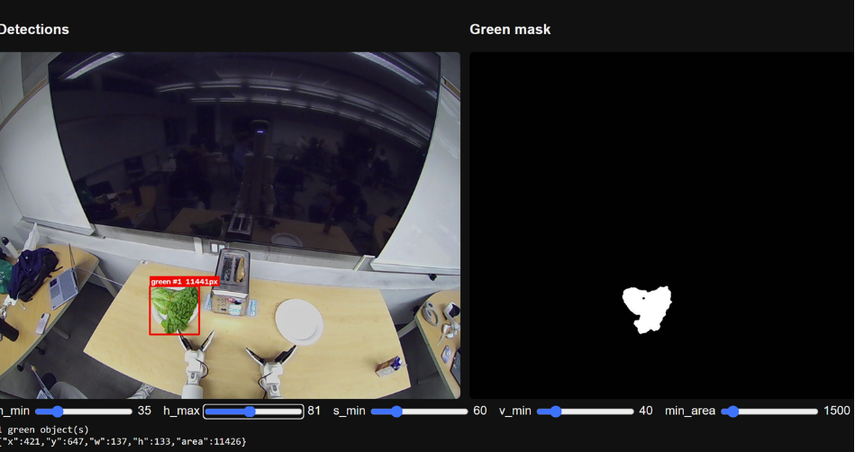
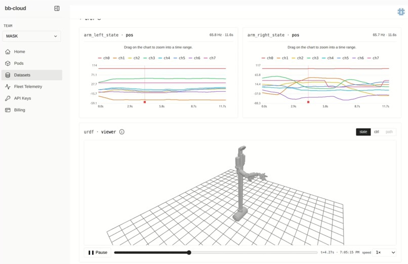
Autonomous VLA sandwich assembly on Bracket Bot · team of four
A dual-arm Bracket Bot that takes toast out of a toaster, puts it on a plate, adds lettuce, and places the top slice. A fine-tuned π₀ VLA handles the difficult grasps, OpenCV + inverse kinematics handles the simple ones, and a state machine switches between them.
Unitree Go2 · NVIDIA Isaac Lab · solo project
A walking policy for a Unitree Go2, trained from scratch with PPO in a custom manager-based RL environment I built in Isaac Lab.
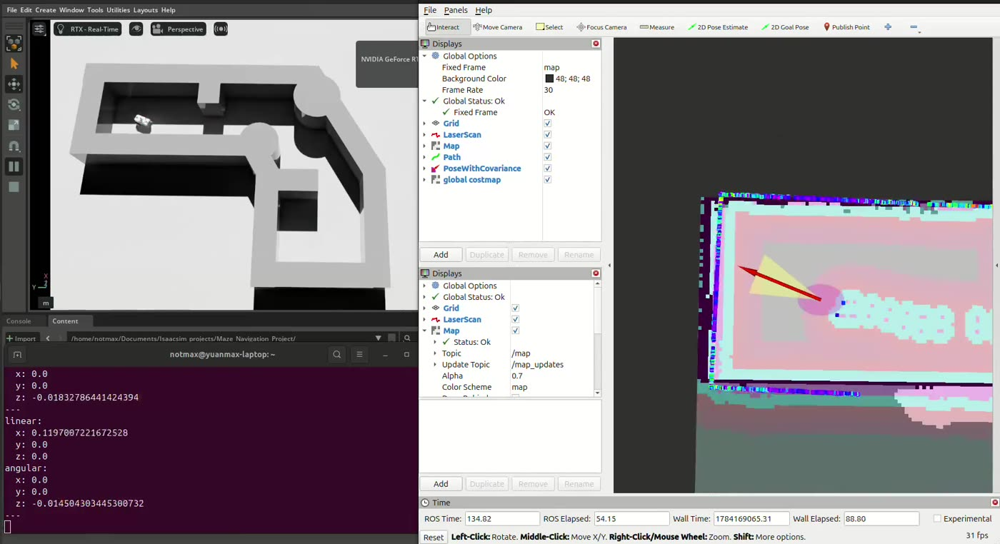


NVIDIA Nova Carter · Isaac Sim 5.1 · ROS2 · solo project
A ROS2 navigation stack on a Nova Carter in Isaac Sim. The robot drives into a maze it hasn't seen, builds a map with SLAM, localizes with AMCL, and uses Nav2 to plan and follow a path to the goal.

4-DOF arm · overhead camera · hackathon team
Ask for a tool in plain language and the arm finds it on the bench and hands it to you. A Groq LLM plans the steps, YOLOv8 finds the tool, and inverse kinematics moves the arm.

Co-captain, lead programmer & driver
Competitive robotics with team 18844, ending at the 2025 FIRST World Championships as Team Canada representatives. I led the software: localization, autonomous pathing, and vision-based pickup.
max@portfolio:~/experience$ git log --oneline
A university design team, a competitive robotics team, and where I'm studying.
WATonomous · University of Waterloo design team
FIRST Tech Challenge · Team 18844 (Pr0teens)
1st place Connect Award, Ochoa Division, at the 2025 FIRST World Championships, as Team Canada representatives.
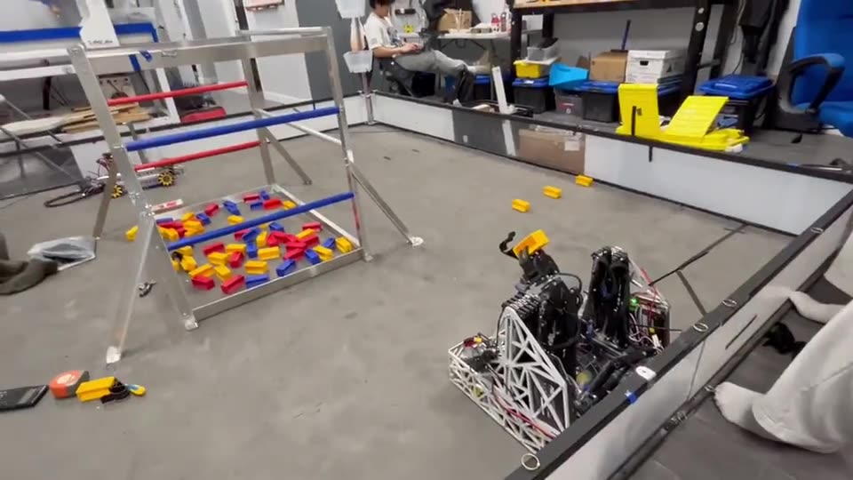
University of Waterloo · Honours Co-op
Education. Waterloo, ON.
max@portfolio:~/awards$ ls
A hackathon win and FIRST championship awards.
BOTS Hackathon · Battle of the Schools · WAT.ai vs. UTMIST · Sept 2026
A dual-arm Bracket Bot that takes toast out of a toaster, adds lettuce, and closes the sandwich with no human control. A fine-tuned π₀ VLA handles the toaster grasp, OpenCV + IK handles the lettuce, and a state machine runs the steps. The prize was four Bambu Lab P1S 3D printers.
Read the case studytrophy shelf
1st place
Battle of the Schools, WAT.ai vs. UTMIST
Sept 20261st place · Connect Award
Ochoa Division, as Team Canada representatives
20252nd place · Inspire Award
Ontario Provincial Championships
Team 18844team canada
FTC team 18844 (Pr0teens) at the 2025 FIRST World Championships, where we won the 1st place Connect Award in the Ochoa Division. I was co-captain, lead programmer, and driver.
The robot and its codemax@portfolio:~/skills$ cat skills.txt
Everything here is from my résumé. Hover or tap a skill to see which projects I used it in.
hover or tap a skill with a number to see where I used it.
hover or tap a skill with a number to see where I used it.
hover or tap a skill with a number to see where I used it.
hover or tap a skill with a number to see where I used it.
hover or tap a skill with a number to see where I used it.
what I'm picking up next, and where.
The same skills, plus projects and experience, in my résumé.
max@portfolio:~/contact$ ping max
Looking for a robotics or ML co-op. Happy to talk about locomotion policies, sim-to-real transfer, robot manipulation, or anything else in robotics.
Email works best. Copy the address or open your mail app.